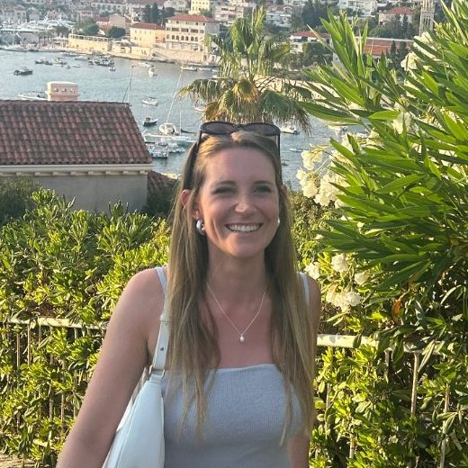
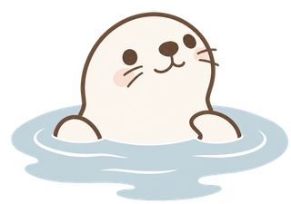

Welcome to Yariya Collective!
Hi, I’m Maria — and welcome to Yariya Collective!
I've recently decided to build a little home for all my creative ideas as a personal project outside of my 9-5 corporate job.
What started as designing cross stitch patterns, quickly developed into an Etsy Shop for unique gifts and soon into authoring children's books (currently writing and self-publishing my first one!) I quickly realized I didn’t want to choose just one creative lane, so I made one instead.
Yariya Collective is my little cozy corner of the internet for creating, experimenting, and turning the random ideas in my head into real things. Some will become products, some will become stories, and some might simply exist because they made me happy to create.
You’ll see lots of whimsical characters, cozy little worlds, nature, seashells, and probably more than a few things I haven’t thought of yet. Mostly inspired by my interests in romantasy novels, traveling, volleyball, and my Cavapoo Mozzie.

And the little seal? That's Melly. She’s going to be joining me along the way.
I’m figuring a lot of this out as I go, and I thought it would be much more fun to share the process than wait until everything was perfect.
So, welcome to the very beginning of Yariya Collective.
I’m really happy you’re here. 🤍
— Maria